Publications
Here is a list of my publications.
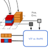 |
Vanilla ViT for Automotive Point Cloud Semantic SegmentationGilles Puy, Nermin Samet, Alexandre Boulch, Spyros Gidaris, Tuan-Hung VU, Renaud MarletArxiv, 2026 |
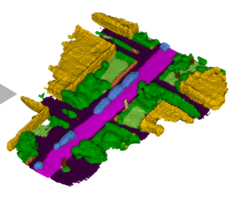 |
SSC-Priors: Exploring Easy Boosts For Lidar Semantic Scene CompletionTetiana Martyniuk, Jonathan Seele, Alexandre Boulch, Gilles Puy, Renaud Marlet, Raoul de CharetteIEEE International Conference on Image Processing (ICIP), 2026 |
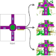 |
EditSSC: Toward Editable Semantic Occupancy Scenes with Unconditional Diffusion ModelsFatima Balde, Raoul de Charette, Alexandre BoulchComputer Vision and Pattern Recognition Workshops (CVPR-W), 2026 |
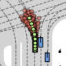 |
Driving on RegistersEllington Kirby, Alexandre Boulch, Yihong Xu, Yuan Yin, Gilles Puy, Éloi Zablocki, Andrei Bursuc, Spyros Gidaris, Renaud Marlet, Florent BartoccioniComputer Vision and Pattern Recognition (CVPR), 2026 |
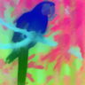 |
NAF: Zero-Shot Feature Upsampling via Neighborhood Attention FilteringLoick Chambon, Paul Couairon, Eloi Zablocki, Alexandre Boulch, Nicolas Thome, Matthieu CordComputer Vision and Pattern Recognition (CVPR), 2026 |
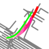 |
PPT: Pretraining with Pseudo-Labeled Trajectories for Motion ForecastingYihong Xu, Yuan Yin, Éloi Zablocki, Tuan-Hung Vu, Alexandre Boulch, Matthieu CordInternational Conference on Robotics & Automation (ICRA), 2026 |
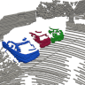 |
Clustering is back: Reaching state-of-the-art LiDAR instance segmentation without trainingCorentin Sautier, Gilles Puy, Alexandre Boulch, Renaud Marlet, Vincent LepetitInternational Conference on 3D Vision (3DV), 2026 1st place in the SemanticKITTI panoptic segmentation benchmark |
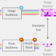 |
Improving Multimodal Distillation for 3D Semantic Segmentation under Domain ShiftBjörn Michele, Alexandre Boulch, Gilles Puy, Tuan-Hung Vu, Renaud Marlet, Nicolas CourtyBritish Machine Vision Conference (BMVC), 2025 |
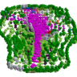 |
SuperQuadricOcc: Multi-Layer Gaussian Approximation of Superquadrics for Real-Time Self-Supervised Occupancy EstimationSeamie Hayes, Reenu Mohandas, Tim Brophy, Alexandre Boulch, Ganesh Sistu, Ciaran EisingarXiv preprint arXiv:2511.17361, 2025 |
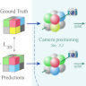 |
Gaussrender: Learning 3d occupancy with gaussian renderingLoick Chambon, Eloi Zablocki, Alexandre Boulch, Mickael Chen, Matthieu CordInternational Conference on Computer Vision (ICCV), 2025 |
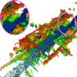 |
Lidpm: Rethinking point diffusion for lidar scene completionTetiana Martyniuk, Gilles Puy, Alexandre Boulch, Renaud Marlet, Raoul de CharetteIntelligent Vehicles Symposium (IV), 2025 |
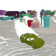 |
UNIT: Unsupervised online instance segmentation through timeCorentin Sautier, Gilles Puy, Alexandre Boulch, Renaud Marlet, Vincent LepetitInternational Conference on 3D Vision (3DV), 2025 |
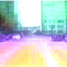 |
Vavim and vavam: Autonomous driving through video generative modelingFlorent Bartoccioni, Elias Ramzi, Victor Besnier, Shashanka Venkataramanan, Tuan-Hung Vu, Yihong Xu, Loick Chambon, Spyros Gidaris, Serkan Odabas, David HurycharXiv preprint arXiv:2502.15672, 2025 |
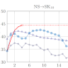 |
Train till you drop: Towards stable and robust source-free unsupervised 3d domain adaptationBjörn Michele, Alexandre Boulch, Tuan-Hung Vu, Gilles Puy, Renaud Marlet, Nicolas CourtyEuropean Conference on Computer Vision (ECCV), 2024 |
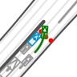 |
Regents: Real-world safety-critical driving scenario generation made stableYuan Yin, Pegah Khayatan, Éloi Zablocki, Alexandre Boulch, Matthieu CordEuropean Conference on Computer Vision, Workshop on Multimodal Perception and Comprehension of Corner Cases in Autonomous Driving (ECCV-W), 2024 |
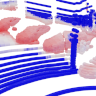 |
Three pillars improving vision foundation model distillation for lidarGilles Puy, Spyros Gidaris, Alexandre Boulch, Oriane Siméoni, Corentin Sautier, Patrick Pérez, Andrei Bursuc, Renaud MarletConference on Computer Vision and Pattern Recognition (CVPR), 2024 |
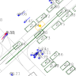 |
Valeo4cast: A modular approach to end-to-end forecastingYihong Xu, Éloi Zablocki, Alexandre Boulch, Gilles Puy, Mickael Chen, Florent Bartoccioni, Nermin Samet, Oriane Siméoni, Spyros Gidaris, Tuan-Hung VuEuropean Conference on Computer Vision, Workshop (ECCV-W), 2024 Conference on Computer Vision and Pattern Recognition, Workshop on Autonomous Driving (CVPR-WAD), 2024 |
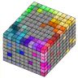 |
Occfeat: Self-supervised occupancy feature prediction for pretraining bev segmentation networksSophia Sirko-Galouchenko, Alexandre Boulch, Spyros Gidaris, Andrei Bursuc, Antonin Vobecky, Patrick Pérez, Renaud MarletConference on Computer Vision and Pattern Recognition, Workshop on Autonomous Driving (CVPR-WAD), 2024 |
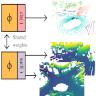 |
Saluda: Surface-based automotive lidar unsupervised domain adaptationBjörn Michele, Alexandre Boulch, Gilles Puy, Tuan-Hung Vu, Renaud Marlet, Nicolas CourtyInternational Conference on 3D Vision (3DV), 2024 |
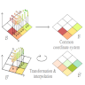 |
Bevcontrast: Self-supervision in bev space for automotive lidar point cloudsCorentin Sautier, Gilles Puy, Alexandre Boulch, Renaud Marlet, Vincent LepetitInternational Conference on 3D Vision (3DV), 2024 |
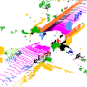 |
Using a waffle iron for automotive point cloud semantic segmentationGilles Puy, Alexandre Boulch, Renaud MarletInternational Conference on Computer Vision (ICCV), 2023 |
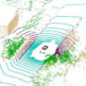 |
Rangevit: Towards vision transformers for 3d semantic segmentation in autonomous drivingAngelika Ando, Spyros Gidaris, Andrei Bursuc, Gilles Puy, Alexandre Boulch, Renaud MarletConference on computer vision and pattern recognition (CVPR), 2023 |
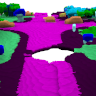 |
ALSO: Automotive lidar self-supervision by occupancy estimationAlexandre Boulch, Corentin Sautier, Björn Michele, Gilles Puy, Renaud MarletConference on Computer Vision and Pattern Recognition (CVPR), 2023 |
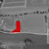 |
Weakly supervised change detection using guided anisotropic diffusionRodrigo Caye Daudt, Bertrand Le Saux, Alexandre Boulch, Yann GousseauMachine Learning, 2023 |
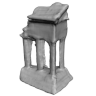 |
Deep surface reconstruction from point clouds with visibility informationRaphael Sulzer, Loic Landrieu, Alexandre Boulch, Renaud Marlet, Bruno ValletInternational Conference on Pattern Recognition (ICPR), 2022 |
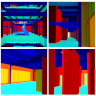 |
VASAD: a volume and semantic dataset for building reconstruction from point cloudsPierre-Alain Langlois, Yang Xiao, Alexandre Boulch, Renaud MarletInternational Conference on Pattern Recognition (ICPR), 2022 |
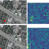 |
Croco: Cross-modal contrastive learning for localization of earth observation dataWei-Hsin Tseng, Hoàng-Ân Lê, Alexandre Boulch, Sébastien Lefèvre, Dirk TiedearXiv preprint arXiv:2204.07052, 2022 |
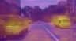 |
Image-to-lidar self-supervised distillation for autonomous driving dataCorentin Sautier, Gilles Puy, Spyros Gidaris, Alexandre Boulch, Andrei Bursuc, Renaud MarletConference on Computer Vision and Pattern Recognition (CVPR), 2022 |
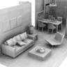 |
Poco: Point convolution for surface reconstructionAlexandre Boulch, Renaud MarletConference on computer vision and pattern recognition (CVPR), 2022 |
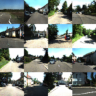 |
Multi-Modal 3D GAN for Urban ScenesLoïck Chambon, Mickael Chen, Tuan-Hung Vu, Alexandre Boulch, Andrei Bursuc, Matthieu Cord, Patrick PérezConference on Neural Information Processing Systems Workshop (NeurIPS-W), 2022 |
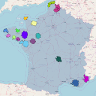 |
"Semi-supervised semantic segmentation in earth observation: The minifrance suite, dataset analysis and multi-task network study"Javiera Castillo-Navarro, Bertrand Le Saux, Alexandre Boulch, Nicolas Audebert, Sébastien LefèvreMachine Learning, 2022 |
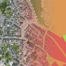 |
Report on the 2022 IEEE Geoscience and Remote Sensing Society Data Fusion Contest: Semisupervised learningRonny Hansch, Claudio Persello, Gemine Vivone, Javiera Castillo Navarro, Alexandre Boulch, Sebastien Lefevre, Bertrand Le SauxIEEE geoscience and remote sensing magazine, 2022 |
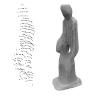 |
Needrop: Self-supervised shape representation from sparse point clouds using needle droppingAlexandre Boulch, Pierre-Alain Langlois, Gilles Puy, Renaud MarletInternational Conference on 3D Vision (3DV), 2021 |
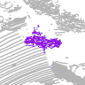 |
Generative zero-shot learning for semantic segmentation of 3d point cloudsBjörn Michele, Alexandre Boulch, Gilles Puy, Maxime Bucher, Renaud MarletInternational Conference on 3D Vision (3DV), 2021 |
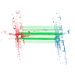 |
PCAM: Product of cross-attention matrices for rigid registration of point cloudsAnh-Quan Cao, Gilles Puy, Alexandre Boulch, Renaud MarletInternational conference on computer vision (ICCV), 2021 |
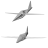 |
3D Reconstruction By Parameterized Surface MappingPierre-Alain Langlois, Matthew Fisher, Oliver Wang, Vladimir Kim, Alexandre Boulch, Renaud Marlet, Bryan RussellInternational Conference on Image Processing (ICIP), 2021 |
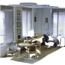 |
FKAConv: Feature-Kernel Alignment for Point Cloud ConvolutionAlexandre Boulch, Gilles Puy, Renaud MarletAsian Conference on Computer Vision (ACCV), 2020 |
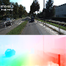 |
Starflow: A spatiotemporal recurrent cell for lightweight multi-frame optical flow estimationPierre Godet, Alexandre Boulch, Aurélien Plyer, Guy Le BesneraisInternational conference on pattern recognition (ICPR), 2021 |
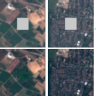 |
Energy-based models for earth observation applicationsJaviera Castillo Navarro, Bertrand Le Saux, Alexandre Boulch, Sébastien LefevreInternational Conference on Learning representation, Energy Based Models Workshop (ICLR-W) 2021 |
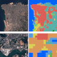 |
Energy-based models in Earth observation: From generation to semisupervised learningJaviera Castillo-Navarro, Bertrand Le Saux, Alexandre Boulch, Sebastien LefevreIEEE Transactions on Geoscience and Remote Sensing, 2021 |
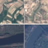 |
Classification and generation of Earth observation images using a joint energy-based modelJaviera Castillo-Navarro, Bertrand Le Saux, Alexandre Boulch, Sébastien LefèvreInternational Geoscience and Remote Sensing Symposium (IGARSS), 2021 |
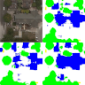 |
On auxiliary losses for semi-supervised semantic segmentationJaviera Castillo-Navarro, Bertrand Le Saux, Alexandre Boulch, Sébastien LefevreEuropean Conference on Machine Learning and Principles and Practice of Knowledge Discovery in Databases (ECML PKDD), 2020 |
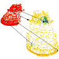 |
Flot: Scene flow on point clouds guided by optimal transportGilles Puy, Alexandre Boulch, Renaud MarletEuropean conference on computer vision (ECCV), 2020 |
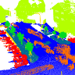 |
ConvPoint: Continuous convolutions for point cloud processingAlexandre BoulchComputers & Graphics, 2020 |
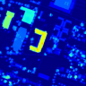 |
Artificial Intelligence and Decision Making - Recent Examples of Deep Learning Contributions for Earth Observation IssuesE. Colin Koeniguer, G. Le Besnerais, A. Chan Hon Tong, B. Le Saux, A. Boulch, P. Trouvé, R. Caye Daudt, N. Audebert, G. Brigot, P. Godet, B. Le Teurnier, M. Carvalho, J. Castillo-NavarroAerospaceLab journal, 2020 |
What data are needed for semantic segmentation in earth observation?Javiera Castillo-Navarro, Nicolas Audebert, Alexandre Boulch, Bertrand Le Saux, Sébastien LefèvreJoint urban remote sensing event (JURSE), 2019 |
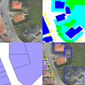 |
Learning to understand earth observation images with weak and unreliable ground truthRodrigo Caye Daudt, Adrien Chan-Hon-Tong, Bertrand Le Saux, Alexandre BoulchInternational Geoscience and Remote Sensing Symposium (IGARSS), 2019 |
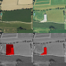 |
Guided anisotropic diffusion and iterative learning for weakly supervised change detectionRodrigo Caye Daudt, Bertrand Le Saux, Alexandre Boulch, Yann GousseauConference on Computer Vision and Pattern Recognition, Workshop (CVPR-W), 2019 |
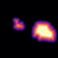 |
Distance transform regression for spatially-aware deep semantic segmentationNicolas Audebert, Alexandre Boulch, Bertrand Le Saux, Sébastien LefèvreComputer Vision and Image Understanding (CVIU), 2019 |
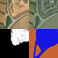 |
Multitask learning for large-scale semantic change detectionRodrigo Caye Daudt, Bertrand Le Saux, Alexandre Boulch, Yann GousseauComputer Vision and Image Understanding (CVIU), 2019 |
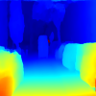 |
Fast stereo disparity maps refinement by fusion of data-based and model-based estimationsMaxime Ferrera, Alexandre Boulch, Julien MorasInternational Conference on 3D Vision (3DV), 2019 |
Surface reconstruction from 3d line segmentsPierre-Alain Langlois, Alexandre Boulch, Renaud MarletInternational Conference on 3D Vision (3DV), 2019 |
Retrieval of forest vertical structure from PolInSAR data by machine learning using LIDAR-derived featuresGuillaume Brigot, Marc Simard, Elise Colin-Koeniguer, Alexandre BoulchRemote Sensing, 2019 |
Technical Report: Co-learning of geometry and semantics for online 3D mappingMarcela Carvalho, Maxime Ferrera, Alexandre Boulch, Julien Moras, Bertrand Le Saux, Pauline Trouvé-PelouxarXiv preprint arXiv:1911.01082, 2019 |
Détection et reconnaissance d’endommagements dans les matériaux composites par Deep LearningAntoine Hurmane, Jean-Michel Roche, Francois-Henri Leroy, Alexandre Boulch, Guy Le Besneray21ème Journées Nationales sur les Composites, 2019 |
Estimation de flot optique multiframe par apprentissage profondPierre Godet, Aurélien Plyer, Alexandre Boulch, Guy Le BesneraisColloque GRETSI sur le Traitement du Signal et des Images, 2019 |
Réseaux de neurones semi-supervisés pour la segmentation sémantique en télédétectionJaviera Castillo-Navarro, Bertrand Le Saux, Alexandre Boulch, Sébastien LefèvreColloque GRETSI sur le Traitement du Signal et des Images, 2019 |
Segmentation sémantique profonde par régression sur cartes de distances signéesNicolas Audebert, Alexandre Boulch, Bertrand Le Saux, Sébastien LefèvreReconnaissance des Formes, Image, Apprentissage et Perception (RFIAP), 2018 |
Détection dense de changements par réseaux de neurones siamoisRodrigo Caye Daudt, Bertrand Le Saux, Alexandre Boulch, Yann Gousseau"Reconnaissance des Formes, Image, Apprentissage et Perception (RFIAP)", 2018 |
Reducing parameter number in residual networks by sharing weightsAlexandre BoulchPattern Recognition Letters, 2018 |
Learning speckle suppression in SAR images without ground truth: application to sentinel-1 time-seriesAlexandre Boulch, Pauline Trouvé, Elise Koeniguer, Fabrice Janez, Bertr Le SauxInternational Geoscience and Remote Sensing Symposium (IGARSS), 2018 |
Urban change detection for multispectral earth observation using convolutional neural networksRodrigo Caye Daudt, Bertr Le Saux, Alexandre Boulch, Yann GousseauInternational Geoscience and Remote Sensing Symposium (IGARSS), 2018 |
Railway detection: From filtering to segmentation networksBertrand Le Saux, Anne Beaupère, Alexandre Boulch, Jérémie Brossard, Antoine Manier, Guilhem VilleminInternational Geoscience and Remote Sensing Symposium (IGARSS), 2018 |
Large-scale semantic classification: outcome of the first year of inria aerial image labeling benchmarkBohao Huang, Kangkang Lu, Nicolas Audeberr, Andrew Khalel, Yuliya Tarabalka, Jordan Malof, Alexandre Boulch, Bertr Le Saux, Leslie Collins, Kyle BradburyInternational Geoscience and Remote Sensing Symposium (IGARSS), 2018 |
Colored visualization of multitemporal SAR data for change detection: issues and methodsElise Colin-Koeniguer, Alexandre Boulch, Pauline Trouve-Peloux, Fabrice JanezEuropean Conference on Synthetic Aperture Radar (EUSAR), 2018 |
Fully convolutional siamese networks for change detectionRodrigo Caye Daudt, Bertr Le Saux, Alexandre BoulchInternational conference on image processing (ICIP), 2018 |
SnapNet: 3D point cloud semantic labeling with 2D deep segmentation networksAlexandre Boulch, Joris Guerry, Bertrand Le Saux, Nicolas AudebertComputers & Graphics, 2018 Eurographics Workshop 3D Object Retrieval (3DOR), 2017 |
Ionospheric activity prediction using convolutional recurrent neural networksAlexandre Boulch, Noëlie Cherrier, Thibaut CastaingsarXiv preprint arXiv:1810.13273, 2018 |
Point-cloud shape retrieval of non-rigid toysF Limberger, RC Wilson, M Aono, N Audebert, A Boulch, B Bustos, Andrea Giachetti, A Godil, B Le Saux, B LiEurographics Workshop on 3D Object Retrieval. The Eurographics Association, 2017 |
SHREC'17: deformable shape retrieval with missing partsEmanuele Rodolà, Luca Cosmo, Or Litany, Michael M Bronstein, Alexander M Bronstein, Nicolas Audebert, A Ben Hamza, Alexandre Boulch, Umberto Castellani, Do MNEurographics Workshop on 3D Object Retrieval, 2017 |
Deep learning for urban remote sensingNicolas Audebert, Alexandre Boulch, Hicham Randrianarivo, Bertrand Le Saux, Marin Ferecatu, Sébastien Lefevre, Renaud MarletJoint Urban Remote Sensing Event (JURSE), 2017 |
Deep sequence-to-sequence neural networks for ionospheric activity map predictionNoëlie Cherrier, Thibaut Castaings, Alexandre BoulchInternational Conference on Neural Information Processing (ICONIP), 2017 |
Snapnet-r: Consistent 3d multi-view semantic labeling for roboticsJoris Guerry, Alexandre Boulch, Bertrand Le Saux, Julien Moras, Aurélien Plyer, David FilliatInternational conference on computer vision workshops (ICCV-W), 2017 |
Radar and optical remote sensing in offshore domain to detect, characterize, and quantify ocean surface oil slicksS Angelliaume, X Ceamanos, F Viallefont-Robinet, R Baqué, Ph Déliot, V MiegebielleRemote Sensing of the Ocean, Sea Ice, Coastal Waters, and Large Water Regions, 2017 |
Off-the-shelf deep learning pipeline for remote sensing applicationsRachit Tripathi, Adrien Chan-Hon-Tong, Alexandre BoulchBig Data from Space (BIDS), ESA Workshop, 2016 |
Deep learning for remote sensingNicolas Audebert, Alexandre Boulch, Adrien Lagrange, Bertrand Le Saux, Sébastien LefevreCommunications of the 16th ONERA-DLR Aerospace Symposium, 2016 |
Benchmarking classification of earth-observation data: From learning explicit features to convolutional networksAdrien Lagrange, Bertrand Le Saux, Anne Beaupere, Alexandre Boulch, Adrien Chan-Hon-Tong, Stéphane Herbin, Hicham Randrianarivo, Marin FerecatuInternational Geoscience and Remote Sensing Symposium (IGARSS), 2015 Journal of Selected Topics in Applied Earth Observations and Remote Sensing (JSTARS), 2016 |
Deep learning for robust normal estimation in unstructured point cloudsAlexandre Boulch, Renaud MarletComputer graphics forum, 2016 Symposium on Geometry Processing (SGP), 2016 |
Un générateur de boites englobantes parcimonieux pour la détection d'objets dans des vidéosAdrien Chan-Hon-Tong, Stephane Herbin, Alexandre BoulchColloque GRETSI sur le Traitement du Signal et des Images, 2015 |
DAG of convolutional networks for semantic labelingAlexandre Boulch"Technical report, Office national d’études et de recherches aérospatiales", 2015 |
Statistical criteria for shape fusion and selectionAlexandre Boulch, Renaud MarletInternational Conference on Pattern Recognition (ICPR), 2014 |
Piecewise‐planar 3D reconstruction with edge and corner regularizationAlexandre Boulch, Martin de La Gorce, Renaud MarletComputer Graphics Forum, 2014 Symposium on Geometry Processing (SGP), 2014 |
Semantizing complex 3D scenes using constrained attribute grammarsAlexandre Boulch, Simon Houllier, Renaud Marlet, Olivier TournaireComputer Graphics Forum, 2013 Symposium on Geometry Processing (SGP), 2013 |
Irreducible triangulations of surfaces with boundaryAlexandre Boulch, Éric Colin de Verdière, Atsuhiro NakamotoGraphs and Combinatorics, 2013 |
Fast and robust normal estimation for point clouds with sharp featuresAlexandre Boulch, Renaud MarletComputer graphics forum, 2012 Symposium on Geometry Processing (SGP), 2012 |